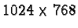

A problem with the exchange of images on the Internet is that not all computers have the capability of displaying a large number of colors simultaneously. For example, a computer using a display resolution of  and using 1 byte (8 bits) of color per pixel requires at least 0.786 Mb of RAM on the video adapter card. Such a system is capable of displaying only 28=256 colors simultaneously.
Alternatively, a system that is using 2 bytes (16 bits) per pixel can display 216=65,536 colors, and 3 bytes (24 bits) per pixel can display 224=16,777,216colors. Thus, the available color palette grows significantly on a 16 bits-per-pixel (bpp) system. A 24 bpp system is known as a true or high color system. However, the demands on the video adapter for these systems also grows. A 16 bpp system on a pixel display requires about 1.6 Mb of video RAM and a 24 bpp system requires 2.4 Mb.
Many video adapter cards have only 1 Mb or less of RAM. Although this is less and less common with current computers being delivered with up to 32 Mb of video RAM, there are still many legacy machines that have smaller quantities. The consequence is that an image containing more than 256 colors cannot be faithfully displayed on machines with only an 8 bpp color depth. Some of the original colors in the image will have to be replaced because of the lack of a sufficient number of available colors on the displaying system. This replacement creates color distortion in the displayed image.
The GIMP uses 24 bits per pixel to represent color, 8 bits for each of the R, G, and B channels. Thus, the GIMP can easily generate images that have color distortion when displayed on low color systems. This is a concern for the Web designer who wants to ensure an accurate representation of color for his or her graphics. This section discusses the issues of preparing web-safe color graphics and how to achieve this in the GIMP.
Color distortion occurs when the monitor is already displaying all the
colors it can, and a request for a new color is made. The least
sophisticated way of handling this request is by color
clipping.
This approach displays new colors using the closest color from the
palette already being displayed. For images with subtle color
shading, this can give rise to banding , which is also called posterization . An example of this type of color distortion is
shown in Figure 9.23.
The other type of color distortion is called dithering . Although dithering is a color distortion, this is not a bug, it's a feature! Dithering is a technique used to simulate unavailable colors by spatially mixing the available ones as a mesh of small dots. The idea is that color dithering is more visually acceptable than color banding. Figure 9.23(c) illustrates the effect of dithering. Figure 9.23(f) shows a zoomed version of Figure 9.23(c) so that you can see the mix of small dots used to simulate unavailable colors. Compare this zoomed image with the zooms of the original and color clipped images shown in Figure 9.23(d) and (e), respectively.
Figure 9.23 shows that dithering is a
much more sophisticated approach to the problem of color distortion
than is banding. For continuous gradients of color, the rule seems to
be that the dithering approach is superior. However, there are
caveats to this rule. To see why, you need to understand how
dithering works. A simple illustration is shown in
Figure 9.24, where
Figure 9.24(b) shows that a 1-pixel check size is being used by the Checkerboard plug-in. The result is a simulated dither of the color yellow, as you can see in Figure 9.24(c). That the resulting dithered color is yellow follows from the discussions of the RGB colorspace in Section 5.1. The vector sum of red and green in the RGB cube yields yellow.
A zoomed version of Figure 9.24(c) is shown in Figure 9.24(d). This plainly shows the red and green checks. For comparison purposes, a pure yellow is shown in Figure 9.24(e). The example shown in Figure 9.24 is exaggerated because it is never necessary to dither two colors as distant from each other in the color cube as are red and green. However, it nicely illustrates how dithering works.
The dithering algorithms used in the GIMP are far more sophisticated than that illustrated in our checkerboard example. In the GIMP, several dithering algorithms are available including the Floyd-Steinberg algorithm. The main feature of Floyd-Steinberg dithering is that it uses a pseudo-random spatial distribution of up to three colors to simulate an unavailable color. Figure 9.23(f) clearly shows the pseudo-random nature of Floyd-Steinberg dithering. In many cases, it is this pseudo-random aspect of Floyd-Steinberg dithering that improves the overall perception of a dithered color image...but not always. See Section 9.5.4 for more on this subject.
A low color system provides only 8 bits of color per pixel, which allows only 256 colors to be simultaneously displayed. When used on low-color systems, Web browsers must choose how to represent unavailable colors. Browsers such as Netscape Navigator and Internet Explorer use color palette systems that are similar but not identical. The colors that these two browsers have in common are known as the web-safe color palette [12]. Any designer that is concerned with avoiding color distortion must be aware of this special palette and how to use it.
The web-safe color palette consists of combinations of the six values 0, 51, 102, 153, 204, 255 in each of the three colors red, green, and blue. Thus, using notation introduced in Section 5.1, 51R 204G 153B is a color from the web-safe color palette, and 52R 204G 153B is not. The total number of colors in the palette is 63=216. The reason six values are used is because seven would create too many colors for a low-color system (that is, 73=343). What happens to the remaining 40 colors available on a low color system? They are used for system specific colors, and these uses differ for Mac and PC and for Netscape Navigator and Internet Explorer. The bottom line is you can't rely on them.
If you are using the GIMP's drawing and painting tools to create graphics from scratch and you desire the result to be web-safe, it would be useful to have a palette of the 216 web-safe colors to work with. You could use this palette to select the colors for your graphics, knowing that the result will be the same on most all systems, low color or not. The GIMP has a variety of predefined color palettes available in the Color Palette dialog found in the Image:Dialogs/Palette menu or which can be obtained by typing C-p in the image or toolbox windows.
Of interest is the GIMP's Web color palette shown in Figure 9.25.
The VisiBone palettes at
http://www.visibone.com/swatches
are just such tools. The VisiBone2 palette is
illustrated in Figure 9.26.
For display on 8-bit (low-color) systems, the best way to control the
color in an image is to convert it to Indexed format.
Figure 9.27(a)
The dialog allows the choice of three types of palettes. The first option, Generate Optimal Palette, is based on the colors actually in the image. The number of colors used in this palette can be specified up to a maximum of 256.
The second option, Use Custom Palette, allows you to select from a large collection of palettes including user-defined ones. The names of the GIMP's standard palettes are shown in Figure 9.27(b) and (c). The default custom palette, Web, is optimized for display on low-color systems using browsers such as Netscape Navigator or Internet Explorer. This consists of the 216 color, web-safe color palette illustrated in Figure 9.25. Choosing this option guarantees that the resulting indexed image will display with the same colors on almost all systems.
The final palette option choice, shown in Figure 9.27, is the Use Black/White (1-bit) Palette. This option converts the image to a true black and white (no grays) Indexed format.
The second area in the Indexed Color Conversion dialog is for dithering options. The following are the choices:
Given that the designer chooses to limit the color palette to one that is web-safe, converting to Indexed format still requires making choices about the type of color distortion that is acceptable when it can't be avoided. Usually the choice depends on the type of image to be displayed.
If the image is a photograph, or one that has smooth color variations,
chances are good that there are more than 256 colors in the image, and
many will not be from the web-safe palette. Normally the color
distortion to photos on an 8-bit display is not noticeable, and it
could be argued that it is fruitless to convert the image to an
Indexed format under these conditions. However, when photographs are
mixed with other graphic materials the argument is no longer valid.
Under these circumstances, the best choice is to dither. This is
illustrated in Figure 9.28.
Figure 9.28(a) shows a splash screen used with version 1.0.4 of the GIMP. A dithered version of the splash screen, obtained using the web-safe color palette, is shown in Figure 9.28(b). A color clipped version of the splash screen using the same palette is shown in Figure 9.28(c). Due to the heavy banding seen in Figure 9.28(c), the color distortion due to dithering, seen in Figure 9.28(b), seems much more acceptable. This example shows that for images with smoothly varying color, the dithered solution is better because clipping gives rise to a strongly objectionable color distortion.
If the image is not a photograph and does not have smoothly varying
variations in color but rather large regions of constant color, the
strategy is completely different. This is illustrated in
Figure 9.29.
The dithering in Figure 9.29(b) produces a very undesirable effect. The blue and yellow regions both suffer from unsightly color speckle. On the other hand, the color clipped version in Figure 9.29(c) produces a blue and a yellow that are slightly different than those of the original. Nevertheless, it is likely that this result is preferable because it preserves the homogeneity of the large, uniform color regions.
In conclusion, images that have a lot of detail and subtle color variations are better served by dithering than color clipping. Alternatively, images that have broad uniform color regions should avoid dithering and use color clipping. For images that consist of a mix of the two conditions, some experimentation is necessary. Unfortunately there are sometimes no easy choices.